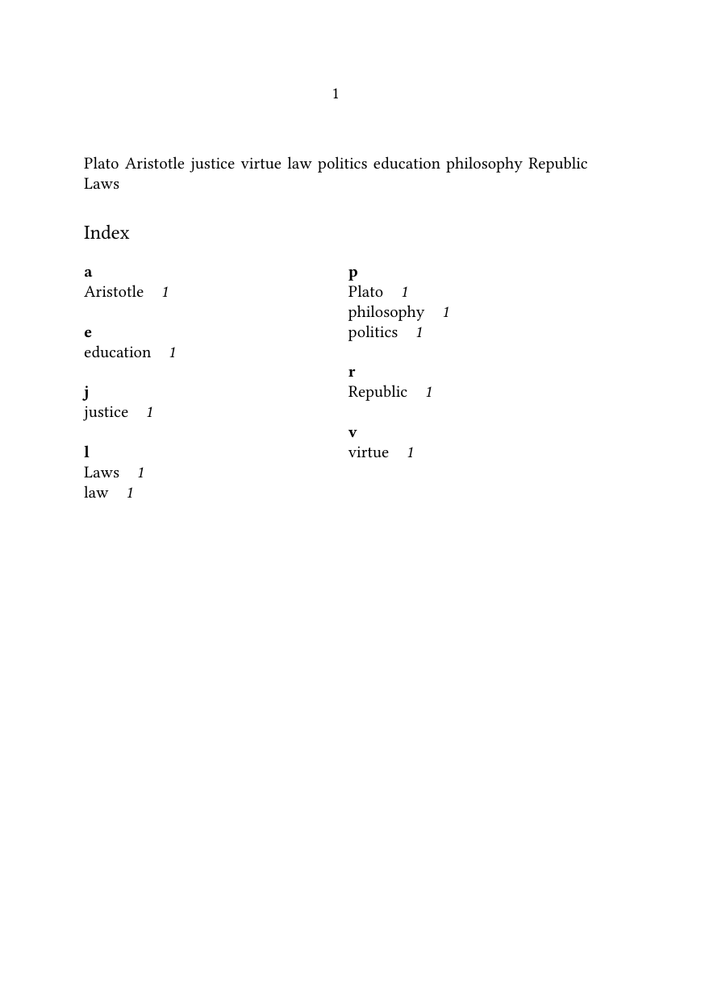
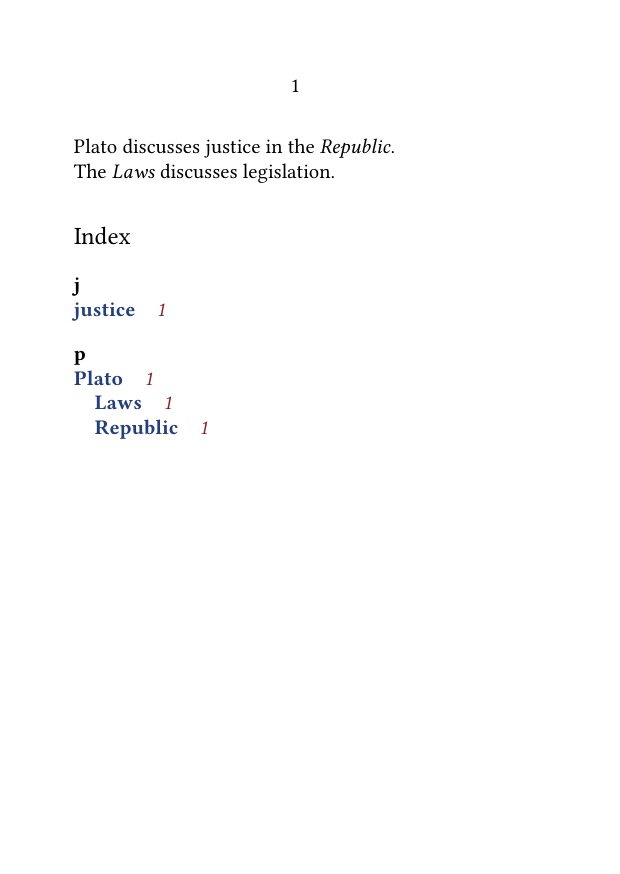
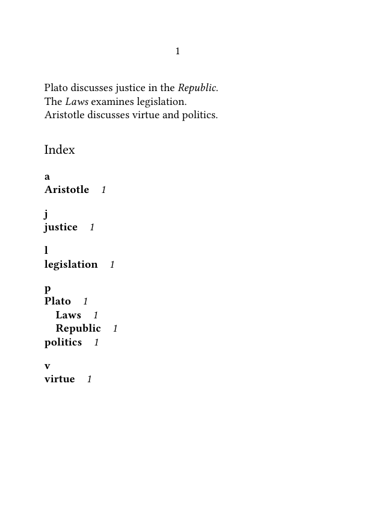

Indexes and registers in ConTeXt · Overview · Tutorial · How-to guides · Reference · Explanation · Glossary
🚧 Under construction — This page is still being developed. Feel free to improve the text or code, add tested examples, and correct or clarify incomplete information.
How-to guide — Formatting an index · Previous: Structuring index entries and cross-references · Next: Creating multiple registers
Contents
- 1 1. Goal
- 2 2. Start from the default index
- 3 3. Set the number of columns
- 4 4. Display or suppress alphabetical indicators
- 5 5. Style principal entries
- 6 6. Style entry text separately
- 7 7. Style page references
- 8 8. Control the distance before page references
- 9 9. Align page references
- 10 10. Format hierarchical levels
- 11 11. Rename the index heading
- 12 12. Choose between \placeindex and \completeindex
- 13 13. Combine several formatting settings
- 14 14. MWE: a formatted one-column index
- 15 15. Adapt the design to the document
-
16
16. Common problems
- 16.1 16.1. The index is too dense
- 16.2 16.2. The index occupies too much space
- 16.3 16.3. Page references are difficult to distinguish
- 16.4 16.4. Every hierarchy level looks identical
- 16.5 16.5. The heading appears twice
- 16.6 16.6. Color names are not defined
- 16.7 16.7. A global style is used where selective formatting is needed
- 17 17. What this guide has established
- 18 18. Next steps
1. Goal
Configure the visual presentation of a standard ConTeXt index.
This guide explains how to control:
- the number of columns;
- alphabetical indicators;
- the style and color of entries;
- the style and color of page references;
- spacing between entries and references;
- the alignment of page references;
- the index heading;
-
the difference between
\placeindexand\completeindex.
This guide assumes that index entries have already been added with \index.
For entry hierarchies, sorting keys, and “see” cross-references, see:
Main command
\setupregister [index] [...]
The name index identifies the standard predefined register.
2. Start from the default index
A minimal index requires no special formatting setup:
\starttext
Plato\index{Plato} discusses justice\index{justice}
in the \emph{Republic}\index{Republic}.
\page
\subject{Index}
\placeindex
\stoptext
The default appearance depends on the current ConTeXt version, document design, body font, language, and register settings.
Use \setupregister[index][...] when the default presentation does not match the needs of the document.
Formatting does not change entry structure
Settings such as style, pagestyle, n, and distance affect the presentation of the index.
They do not change the hierarchy, sorting key, or page locations recorded by \index.
3. Set the number of columns
Use the n setting to control the number of columns:
\setupregister [index] [n=1]
A one-column index is useful when:
- entries are long;
- many subentries are present;
- the page is narrow;
- page references need generous horizontal space.
For two columns:
\setupregister [index] [n=2]
A two-column index is useful when:
- entries are short;
- the page is wide enough;
- economy of space is important;
- the index contains many brief entries.
3.1. MWE: comparing one-column and two-column indexes
-
\setuppapersize[A5] \setupbodyfont [libertinus,10pt] \setupregister [index] [n=2] \starttext Plato\index{Plato} Aristotle\index{Aristotle} justice\index{justice} virtue\index{virtue} law\index{law} politics\index{politics} education\index{education} philosophy\index{philosophy} Republic\index{Republic} Laws\index{Laws} % \page \subject{Index} \placeindex \stoptext
-

Choose columns according to content
Do not select two columns merely because indexes are traditionally compact.
Long entries, deep hierarchies, or extensive page ranges may be more readable in one column.
4. Display or suppress alphabetical indicators
Alphabetical indicators divide the index into groups such as A, B, C, and so on.
Enable them with:
\setupregister [index] [indicator=yes]
Suppress them with:
\setupregister [index] [indicator=no]
Indicators are useful when:
- the index is long;
- readers need to scan large alphabetical groups;
- entries begin with many different letters.
They may be unnecessary when:
- the index is very short;
- only a few entries are present;
- the design calls for a continuous compact list.
4.1. Combine indicators with columns
For example:
\setupregister [index] [n=2, indicator=yes]
The indicator introduces each alphabetical group independently of the number of columns.
5. Style principal entries
Use style to control the general style of register entries:
\setupregister [index] [style=bold]
Possible style values include ordinary ConTeXt style commands or predefined style names, depending on the document setup.
For example:
\setupregister [index] [style=italic]
or:
\setupregister [index] [style=\bf]
Do not overemphasize every entry
If every principal entry is bold, colored, or otherwise strongly marked, the index may become visually heavy.
Use emphasis to clarify hierarchy rather than to decorate every line.
6. Style entry text separately
The textstyle setting controls the style applied to the entry text:
\setupregister [index] [textstyle=bold]
Similarly, textcolor controls the color of the entry text:
\setupregister [index] [textcolor=darkblue]
A combined setup may be written as:
\setupregister [index] [textstyle=bold, textcolor=darkblue]
6.1. Distinguish general style from text style
In simple layouts, style may be sufficient.
Use textstyle when the entry text must be distinguished more precisely from:
- page references;
- alphabetical indicators;
- subordinate material;
- other parts of the register line.
Test the exact result with the current ConTeXt version and the document’s register alternative.
7. Style page references
Use pagestyle to control the style of page numbers:
\setupregister [index] [pagestyle=italic]
Use pagecolor to control their color:
\setupregister [index] [pagecolor=darkred]
A combined setup is:
\setupregister [index] [pagestyle=italic, pagecolor=darkred]
This allows the entry text and page references to be styled independently:
\setupregister [index] [textstyle=bold, textcolor=darkblue, pagestyle=italic, pagecolor=darkred]
7.1. MWE: styling entries and page references separately
-
\setuppapersize[A6] \setupbodyfont [libertinus,10pt] \definecolor [indexentrycolor] [r=.15,g=.25,b=.50] \definecolor [indexpagecolor] [r=.55,g=.15,b=.15] \setupregister [index] [n=1, indicator=yes, textstyle=bold, textcolor=indexentrycolor, pagestyle=italic, pagecolor=indexpagecolor] \starttext Plato\index{Plato} discusses justice\index{justice} in the \emph{Republic}\index{Plato+Republic}. % \page The \emph{Laws}\index{Plato+Laws} discusses legislation. % \page \subject{Index} \placeindex \stoptext
-

-
Because this example must generate several logical pages in order to demonstrate explicit page ranges and typesetting effects, its complete output is not reproduced here as a PNG. Copy and paste this MWE and uncomment
%to compile the MWE to inspect the page sequence and the final registers.
Entry formatting and selective processors are different
The settings textstyle and pagestyle affect the general presentation of the register.
To format only selected entries or selected page references, use processors instead:
8. Control the distance before page references
Use distance to control the horizontal space between the entry text and its page references:
\setupregister [index] [distance=1em]
A larger distance separates the two elements more clearly:
\setupregister [index] [distance=2em]
A smaller distance produces a more compact line:
\setupregister [index] [distance=.5em]
The appropriate value depends on:
- the width of the page;
- the number of columns;
- the body font;
- the length of entries;
- the number and length of page references.
8.1. Avoid excessive separation
A very large distance may detach the page reference visually from its entry.
A very small distance may make the entry and reference difficult to distinguish.
Test the setting with realistic entries rather than with a single short example.
9. Align page references
Some index designs place page references immediately after the entry:
justice 12, 18, 24
Other designs align page references toward the right side of the column:
justice 12, 18, 24
The exact configuration depends on the selected register alternative and alignment settings.
A common starting point is:
\setupregister [index] [alternative=A]
or another available register alternative.
Because alternatives may differ between versions and document setups, compile a short test before adopting one in a large project.
Test register alternatives before documenting them as project defaults
An alternative can affect indentation, line breaking, page-reference placement, and the presentation of subentries.
Test principal entries, subentries, long entries, and multiple page references together.
10. Format hierarchical levels
Principal entries and subentries should remain visually distinguishable.
The hierarchy may be expressed through:
- indentation;
- different styles;
- spacing;
- line breaks;
- register alternatives.
For example, the source:
\index{Plato+Republic}
\index{Plato+Laws}
\index{justice+definition}
should produce a visible relationship between the principal and subordinate levels.
Avoid styling that removes the indentation or makes every level equally prominent.
10.1. Use formatting to clarify structure
A useful visual hierarchy might combine:
- bold principal entries;
- regular subentries;
- italic page references;
- restrained alphabetical indicators.
The exact implementation depends on the chosen register alternative and setup.
Structure comes first
Formatting should make an existing hierarchy easier to read.
It cannot repair inconsistent entry structures such as:
\index{Plato+Republic}
\index{Republic}
\index{Plato+The Republic}
Standardize the entries before refining their appearance.
11. Rename the index heading
The heading used by \completeindex can be changed with the document’s head text setup.
For example:
\setupheadtext [index=General index]
Then:
\completeindex
uses the configured heading.
A French document might use:
\setupheadtext [fr] [index=Index général]
The exact language-specific form should follow the document’s language configuration.
11.1. Create the heading manually
With \placeindex, create the heading explicitly:
\subject{Index of concepts}
\placeindex
This is useful when:
- the heading must use a particular structural level;
- the index is placed inside an existing section;
- the title differs from the standard localized heading;
- several indexes require distinct titles.
12. Choose between \placeindex and \completeindex
The formatting of the index and the creation of its heading are separate decisions.
| Command | Use |
|---|---|
\placeindex
|
Place the index content without automatically creating its structural heading. |
\completeindex
|
Create a complete index division, including the configured heading. |
Use:
\subject{Index}
\placeindex
when the heading is created manually.
Use:
\completeindex
when ConTeXt should create the complete index division.
Practical rule
Use \placeindex when you need direct control over the surrounding structure.
Use \completeindex when the standard complete-register structure is appropriate.
13. Combine several formatting settings
A complete index setup may combine columns, indicators, spacing, and styles:
\setupregister [index] [n=2, indicator=yes, distance=1em, textstyle=bold, pagestyle=italic]
Do not add every available setting at once.
Begin with the smallest setup that solves the actual design problem:
\setupregister [index] [n=1]
Then add only what is needed:
\setupregister [index] [n=1, indicator=yes, distance=1em]
Finally, refine typography:
\setupregister [index] [n=1, indicator=yes, distance=1em, textstyle=bold, pagestyle=italic]
14. MWE: a formatted one-column index
The following example combines:
- one-column placement;
- alphabetical indicators;
- bold entry text;
- italic page references;
- a controlled distance between entries and references;
- a manually created heading.
-
\setuppapersize[A6] \setupbodyfont [libertinus,9pt] \setupregister [index] [n=1, indicator=yes, distance=1em, textstyle=bold, pagestyle=italic] \starttext Plato\index{Plato} discusses justice\index{justice} in the \emph{Republic}\index{Plato+Republic}. % \page The \emph{Laws}\index{Plato+Laws} examines legislation\index{legislation}. % \page Aristotle\index{Aristotle} discusses virtue\index{virtue} and politics\index{politics}. % \page \subject{Index} \placeindex \stoptext
-

-
Because this example must generate several logical pages in order to demonstrate explicit page ranges and typesetting effects, its complete output is not reproduced here as a PNG. Copy and paste this MWE and uncomment
%to compile the MWE to inspect the page sequence and the final registers.
Compile the example and verify that:
- the index is placed in one column;
- alphabetic indicators are visible;
- entry text is bold;
- page references are italic;
- principal entries and subentries remain distinguishable;
-
the heading is created separately with
\subject.
15. Adapt the design to the document
The index should belong typographically to the rest of the publication.
Coordinate its appearance with:
- the body font;
- heading styles;
- page dimensions;
- margins;
- column widths;
- language;
- color policy;
- navigation and interaction settings.
For a small-format book, a one-column index with compact spacing may be appropriate.
For a large-format reference work, two or more columns may be more economical.
For a scholarly edition with long entries and several subentry levels, a single wider column may be easier to read.
16. Common problems
16.1. The index is too dense
Possible causes include:
- too many columns;
- insufficient distance between entries and references;
- small body text;
- long page-reference lists;
- deep entry hierarchies.
Possible corrections include:
\setupregister [index] [n=1, distance=1em]
16.2. The index occupies too much space
Possible corrections include:
- increasing the number of columns;
- reducing excessive vertical spacing;
- compressing consecutive page references;
- shortening unnecessarily verbose entry forms.
For page-reference compression, see:
16.3. Page references are difficult to distinguish
Use a restrained contrasting style:
\setupregister [index] [pagestyle=italic]
or a carefully chosen color:
\setupregister [index] [pagecolor=darkred]
Do not rely on color alone when the document may be printed in grayscale.
16.4. Every hierarchy level looks identical
Review:
- the selected register alternative;
- indentation;
- entry style;
- the consistency of the source hierarchy.
Formatting cannot distinguish levels that were not encoded consistently.
16.5. The heading appears twice
Do not combine:
\subject{Index}
\completeindex
unless two headings are intentionally required.
Use either:
\subject{Index}
\placeindex
or:
\completeindex
16.6. Color names are not defined
If a custom color is used, define it first:
\definecolor [indexblue] [r=.15,g=.25,b=.50]
Then apply it:
\setupregister [index] [textcolor=indexblue]
16.7. A global style is used where selective formatting is needed
This:
\setupregister [index] [pagestyle=bold]
affects page references generally.
To emphasize only selected references, use a processor instead.
17. What this guide has established
This guide has shown how to:
- set the number of index columns;
- display or suppress alphabetical indicators;
- style entry text;
- style page references independently;
- apply restrained colors;
- control the distance between entries and references;
- preserve the visibility of hierarchical levels;
- rename the index heading;
-
distinguish
\placeindexfrom\completeindex; - combine formatting settings progressively;
- adapt the index design to the document.
The central principle is that index formatting should clarify entry hierarchy and help readers connect each subject with its references, without making the register visually heavier than the document it serves.
18. Next steps
18.1. Create separate indexes
18.2. Format selected entries or references
18.3. Manage ranges and compressed references
18.4. Consult commands and terminology
- \setupregister
- \placeindex
- \completeindex
- \placeregister
- \completeregister
- Register command reference
- Understanding the register mechanism
- Glossary of index and register terminology
How-to guide — Formatting an index · Previous: Structuring index entries and cross-references · Next: Creating multiple registers
Indexes and registers in ConTeXt · Overview · Tutorial · How-to guides · Reference · Explanation · Glossary